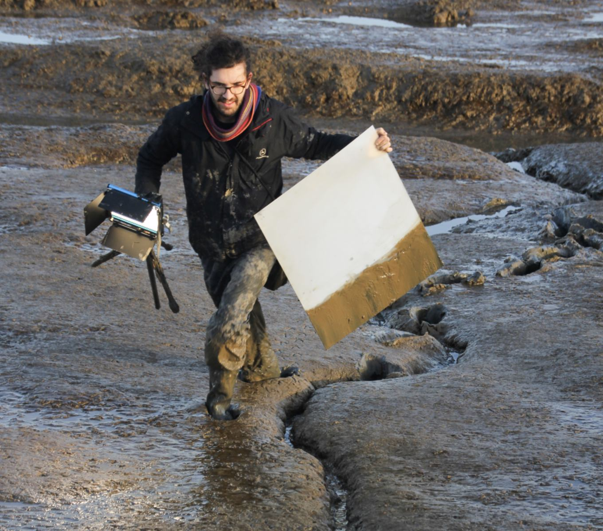
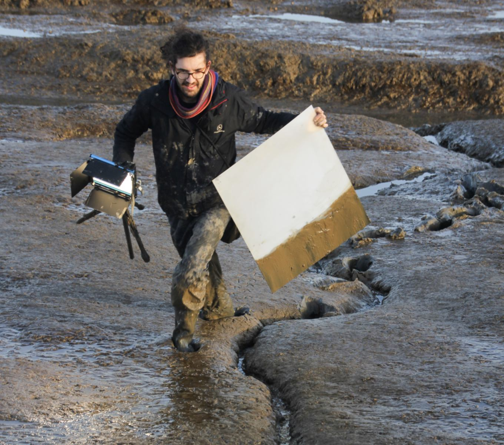

CUSP
2019, 4K digital video with audio, 13 minute loop
A familiar childhood location on the Essex marshes is reframed by inserting images randomly generated by a neural network (GAN*) into this tidal landscape.
Initially trained on a photographic dataset, the machine proceeds to learn the embedded qualities of different marsh birds, in the process revealing forms that fluctuate between species, with unanticipated variations emerging without reference to human systems of classification.
Birds have been actively selected from among the images conceived by the neural network, and then combined into a single animation that migrates from bird to bird, accompanied by a soundscape of artificially generated bird song. The final work records these generated forms as they are projected, using a portable perspex screen, across the mudflats in Landermere Creek. The work both augments and disrupts the natural ecology of the location, as flocks of native birds enter a visual dialogue with these artificial ones.
*Neural networks are programming models which are biologically inspired and learn from observing data. GANs (generative adversarial networks) are neural networks which learn to mimic through generation and refinement.
Acknowledgements
Camera:
Toby ElwesMachine learning models:
Progressive Growing of GANs for Improved Quality, Stability, and Variation (2018)WaveNet: A Generative Model for Raw Audio (2016)
Datasets:
LSUN: Construction of a Large-scale Image Dataset using Deep Learning with Humans in the Loop (2015)Customised dataset of marsh bird images from Flickr community (2019)
Special thanks:
The machine learning community, in particular at Nvidia and Deepmind.Maitreyi Maheshwari and the team at Zabludowicz Collection.
 
Four stills of generated birds / On Location in the Essex marshes

Four stills of generated birds / On Location in the Essex marshes
Installation views: Zabludowicz Collection, London (Photo Tim Bowditch) | Museum für Naturkunde, Berlin